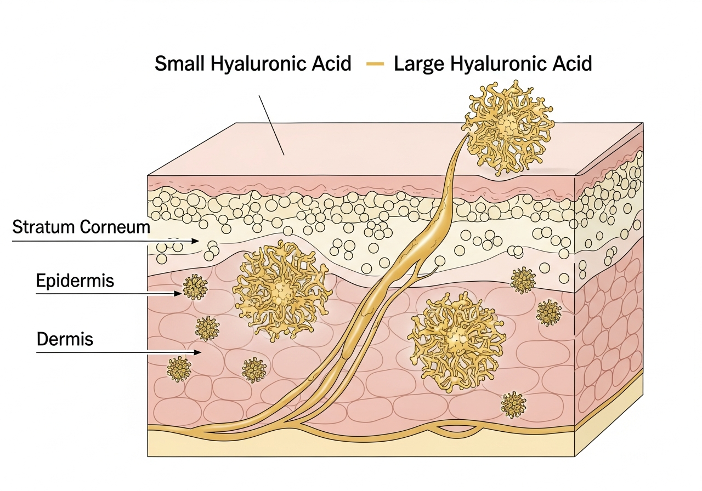

Hyaluronic acid can hold up to 1,000 times its weight in water, making it one of the most powerful hydrating ingredients available for scalp care. But not all HA is created equal - molecular weight determines whether it sits on the surface or actually penetrates the scalp barrier to deliver lasting moisture.
What Is Hyaluronic Acid?
Hyaluronic acid (HA) is a naturally occurring polysaccharide found throughout your body - in your skin, connective tissues, eyes, and joints. Despite its name, it's not an exfoliating acid like glycolic or salicylic acid. Instead, HA functions as a humectant, meaning it attracts and binds water molecules to keep tissues hydrated and plump.
Your body produces hyaluronic acid naturally, but production decreases with age, environmental stress, and UV exposure. This decline is particularly noticeable in the skin and scalp, where reduced HA levels contribute to dryness, decreased elasticity, and impaired barrier function.
- Can bind up to 1,000 times its weight in water
- Naturally present in skin and scalp tissue
- Biocompatible and non-irritating for most skin types
- Molecular size determines penetration depth and function
- Supports tissue hydration and barrier integrity
In skincare and hair care, hyaluronic acid is typically derived from bacterial fermentation or, less commonly, from animal sources. The fermentation method produces a pure, vegan HA that's identical to what your body makes naturally. What differentiates one HA ingredient from another isn't the source - it's the molecular weight.
Why Your Scalp Needs Hyaluronic Acid
Your scalp faces unique hydration challenges that facial skin doesn't. It's covered by hair that can trap heat and moisture, yet it's also exposed to harsh shampoos, hot styling tools, UV radiation, and environmental pollutants. This combination creates a demanding scalp environment that can quickly become dehydrated.
Transepidermal water loss (TEWL) is the process by which water evaporates from the deeper layers of your scalp through the outer barrier to the environment. When your scalp barrier is compromised - whether from hard water, over-washing, chemical treatments, or environmental factors - TEWL increases dramatically. This leads to the cascade of scalp issues we're all familiar with: tightness, flaking, sensitivity, and poor hair growth conditions.
A specialized low molecular weight hyaluronic acid has been clinically shown to deliver significantly more hydration than placebo treatments. In laboratory studies, this specialized HA formulation demonstrated superior water retention capacity and enhanced penetration through the scalp barrier compared to standard hyaluronic acid.
The scalp's hydration needs differ from facial skin in several important ways. Your scalp has more sebaceous glands, which means it produces more oil - but oil and water serve different functions. Sebum creates a protective lipid barrier, while water-based hydration maintains cellular function and tissue elasticity. You can have an oily scalp that's simultaneously dehydrated at the cellular level.
This is where hyaluronic acid becomes particularly valuable. Unlike oils that sit on the surface, HA can actually draw water into the scalp tissue and help maintain that hydration over time. For anyone dealing with dry scalp, environmental damage, or trying to improve overall scalp health, HA addresses the root cause rather than just masking symptoms.
Why Molecular Weight Matters
Here's where most scalp products get it wrong: they use hyaluronic acid without considering molecular weight. The size of HA molecules determines everything about how they function on your scalp.
Molecular weight is measured in Daltons (Da) or kiloDaltons (kDa). Think of it like this: low molecular weight HA consists of smaller molecules that can penetrate deeper, while high molecular weight HA molecules are too large to pass through the scalp barrier and remain on the surface.

| Property | Low MW (<50kDa) | High MW (>1000kDa) | Dual-Weight |
|---|---|---|---|
| Penetration depth | Deep into scalp tissue | Surface only | Multiple layers |
| Primary benefit | Long-term hydration | Immediate moisture barrier | Both deep and surface |
| Water retention | High, deep in tissue | High, at surface | Maximum at all levels |
| Film formation | Minimal | Strong protective film | Balanced protection |
| Best for | Chronic dehydration | Environmental protection | Complete scalp hydration |
| Limitation | Less surface protection | No deep hydration | None (if formulated correctly) |
Low molecular weight HA (typically under 50kDa) can penetrate through the scalp barrier to deliver hydration where it's actually needed - in the deeper layers of the epidermis. This is crucial for addressing chronic scalp dryness and supporting the scalp environment from within. The downside? Low MW HA alone doesn't provide much surface protection against immediate water loss.
High molecular weight HA (over 1000kDa) creates a thin, breathable film on the scalp surface. This film helps prevent transepidermal water loss and provides immediate smoothness and hydration. However, it can't penetrate to address deeper dehydration issues. If your scalp is dry at the cellular level, high MW HA alone will only offer temporary relief.
Dual-weight formulations combine both molecular weights to address multiple layers of the scalp simultaneously. This approach delivers deep, lasting hydration while also protecting the surface against environmental moisture loss. It's the difference between temporarily soothing surface dryness and actually improving your scalp's long-term moisture retention capacity.
Hyaluronic acid is everywhere in skincare, but most scalp products use the wrong molecular weight. Your scalp barrier is different from your face - it needs a dual-weight approach to hydrate both the surface and deeper layers.
Tina Mui, Trichologist and Co-Founder, AWARE Hair
What to Look for in Scalp HA Products
Not all hyaluronic acid products deliver what they promise. Here's how to evaluate whether a scalp care product is using HA effectively or just following trends.
Molecular Weight Specification
Quality formulations will specify the molecular weight of their HA. Look for products that explicitly mention "low molecular weight," "dual-weight," or provide specific kDa ranges. If a product just says "hyaluronic acid" without any specification, it's likely using whatever was cheapest, which is usually high molecular weight HA that won't penetrate your scalp.
Concentration Matters (But Not How You Think)
More HA isn't necessarily better. The effective concentration for scalp care typically ranges from 0.5% to 2%. Beyond that, you're not getting additional benefits - you're just paying for excess ingredient that your scalp can't utilize. What matters more is the molecular weight and how the HA is delivered into the scalp.
Formulation Base
Hyaluronic acid works best when applied to damp skin or scalp, as it needs water molecules to bind to. Look for formulations that either contain sufficient water content or are designed to be used on a damp scalp. Anhydrous (water-free) products containing HA are essentially wasting the ingredient, as there's nothing for it to bind to.
pH Compatibility
Your scalp's natural pH ranges from 4.5 to 5.5, and maintaining this slightly acidic environment is crucial for the scalp microbiome. Hyaluronic acid is most stable and effective in this pH range. Products with pH levels outside this range may contain HA that's degraded or less effective.
Tahitian microalgae extract, a hair care technology combining ceramides with targeted delivery systems, has demonstrated significant improvement in breakage resistance in clinical trials. When paired with dual-weight hyaluronic acid, this technology supports both scalp hydration and hair fiber integrity, addressing the complete scalp environment.
Supporting Ingredients
HA works best as part of a complete hydration system. Look for complementary ingredients like:
- Ceramides - reinforce the scalp barrier to prevent water loss
- Glycerin - another humectant that works synergistically with HA
- Panthenol (Pro-Vitamin B5) - supports scalp barrier repair and moisture retention
- Amino acids - provide building blocks for scalp tissue repair
- Niacinamide - supports barrier function and reduces inflammation
What to Avoid
Certain ingredients can interfere with HA's effectiveness or counteract its hydrating benefits:
- High concentrations of alcohol (denatured alcohol, SD alcohol) - can be drying and degrade HA
- Strong sulfates - may strip away HA before it can work
- Silicones that create heavy occlusion - can prevent HA from drawing in environmental moisture
How to Use Hyaluronic Acid for Your Scalp
Getting the most from hyaluronic acid on your scalp requires understanding how humectants work. HA attracts water - but it needs water to attract. Here's how to apply HA-based products effectively.
Application Method
Always apply hyaluronic acid products to a damp scalp. If you're using a leave-in treatment or serum, apply it after shampooing while your scalp is still slightly damp. For shampoos or conditioners containing HA, they'll work as designed since they're already water-based and used on wet hair.
If you're applying a dedicated HA scalp treatment on a non-wash day, mist your scalp lightly with water first, then apply the product. This gives the HA water molecules to bind to immediately.
Frequency
For most people, using HA-based products 2-3 times per week provides optimal results. If you're addressing severe dryness or live in a particularly harsh climate (extreme cold, low humidity, or high UV exposure), daily use is safe and may be beneficial.
Your scalp will tell you what it needs. If you notice improved moisture, reduced flaking, and better comfort without any greasiness or buildup, you've found your ideal frequency.
Layering with Other Products
Think of your scalp care routine in three steps:
- Cleanse - Remove buildup and prepare the scalp environment
- Hydrate - Apply HA-based treatments to damp scalp
- Seal - Follow with a light moisturizer or scalp oil to lock in hydration
The third step is crucial in dry climates or during winter. In humid environments, HA can pull moisture from the air and you may not need an occlusive layer. But in dry conditions, sealing that hydration with a light oil or barrier-supporting product prevents the HA from pulling moisture out of your scalp instead (which can happen in very low humidity environments).
Best Time to Apply
Morning or evening application both work, but there are strategic advantages to timing:
Evening application allows the HA to work overnight when your scalp is in repair mode and you're not exposing it to environmental stressors. This is ideal for intensive hydration treatments.
Morning application provides protection throughout the day, particularly if you'll be exposed to harsh weather, indoor heating, or UV radiation. If your product includes high MW HA that forms a protective film, morning use maximizes that barrier benefit.
Climate Considerations
Hyaluronic acid responds differently to various environments:
High humidity (above 60%) - HA works optimally, drawing moisture from the air into your scalp. You may need less frequent application and lighter products.
Low humidity (below 30%) - HA can potentially pull moisture from deeper skin layers if there's insufficient environmental moisture. Always follow with an occlusive product to seal in hydration, and consider increasing frequency.
Cold weather - Indoor heating dramatically reduces humidity. Increase HA application frequency and always seal with a moisturizing product. Focus on dual-weight formulations that hydrate deeply and protect the surface.
What to Expect
Unlike some active ingredients that show dramatic results overnight, hyaluronic acid builds cumulative benefits:
Immediately - Surface smoothness, reduced tightness, better product absorption
Within 1-2 weeks - Improved scalp comfort, reduced flaking, less sensitivity
After 4-6 weeks - Enhanced scalp barrier function, sustained moisture balance, better overall scalp environment for hair growth
The key is consistency. Hyaluronic acid supports your scalp's natural hydration mechanisms rather than forcing dramatic change. Give it time to work with your scalp environment rather than against it.
Frequently Asked Questions
Is hyaluronic acid good for your scalp?
Yes, hyaluronic acid is excellent for scalp health. It can hold up to 1,000 times its weight in water, making it one of the most effective hydrating ingredients available. When formulated correctly with appropriate molecular weights, HA helps maintain scalp moisture balance, supports the scalp barrier, and creates an optimal environment for healthy hair growth.
What does hyaluronic acid do for hair?
Hyaluronic acid primarily works on the scalp rather than the hair shaft itself. It hydrates the scalp environment, reduces transepidermal water loss, supports the scalp microbiome, and improves the scalp's ability to retain moisture. When your scalp is properly hydrated, it creates better conditions for hair growth and reduces issues like flaking, irritation, and breakage at the root.
How often should I use hyaluronic acid on my scalp?
For most people, using HA-based products 2-3 times per week provides optimal results. If you're addressing severe dryness or live in a particularly harsh climate, daily use is safe. The key is applying to a damp scalp and following with a moisturizing product to seal in the hydration. Your scalp will tell you what it needs - if you notice improved moisture without greasiness or buildup, you've found your ideal frequency.
Can hyaluronic acid help with dry scalp?
Absolutely. Hyaluronic acid is particularly effective for dry scalp because it addresses the root cause - lack of moisture retention. Unlike oils that sit on the surface, HA actually draws water into the scalp tissue and helps prevent moisture loss. For best results with dry scalp, look for dual-weight HA formulations that hydrate both the surface and deeper layers of the scalp. Learn more in our dry scalp shampoo guide.
What is dual-weight hyaluronic acid?
Dual-weight hyaluronic acid combines both low molecular weight (under 50kDa) and high molecular weight (over 1000kDa) HA in one formulation. The low MW molecules penetrate deeper into the scalp to provide lasting hydration, while the high MW molecules form a protective film on the surface to prevent water loss. This approach is more effective than single-weight formulations because it addresses multiple layers of the scalp simultaneously.
Does molecular weight really matter for scalp products?
Yes, molecular weight is critical. Low molecular weight HA (under 50kDa) can penetrate the scalp barrier to deliver deep hydration, while high molecular weight HA (over 1000kDa) stays on the surface to prevent water loss. Using the wrong molecular weight means you're either only addressing surface symptoms or missing surface protection. The most effective scalp products use a combination of both to target multiple layers of the scalp simultaneously.
What's Your Scalp's Threat Level?
Get a free Scalp Environment Report with UV exposure, pollen levels, water quality analysis, and a personalized routine tailored to where you live.
References
- Papakonstantinou E, Roth M, Karakiulakis G. Hyaluronic acid: A key molecule in skin aging. Dermatoendocrinol. 2012;4(3):253-258.
- Keen MA. Hyaluronic acid in dermatology. Skinmed. 2017;15(6):441-448.
- Ghazi K, Deng-Pichon U, Warnet JM, Rat P. Hyaluronan fragments improve wound healing on in vitro cutaneous model through P2X7 purinoreceptor basal activation: role of molecular weight. PLoS One. 2012;7(11):e48351.
- Independent ingredient testing data. Dual-weight hyaluronic acid efficacy study: Hydration and barrier support in skin tissue models. Technical documentation, 2023.
- Tahitian microalgae ingredient testing data. Hair breakage resistance and fiber integrity assessment. Clinical study report, 2024.
- Juncan AM, Moisă DG, Santini A, Morgovan C, Rus LL, Vonica-Țîncu AL, Loghin F. Advantages of Hyaluronic Acid and Its Combination with Other Bioactive Ingredients in Cosmeceuticals. Molecules. 2021;26(15):4429.